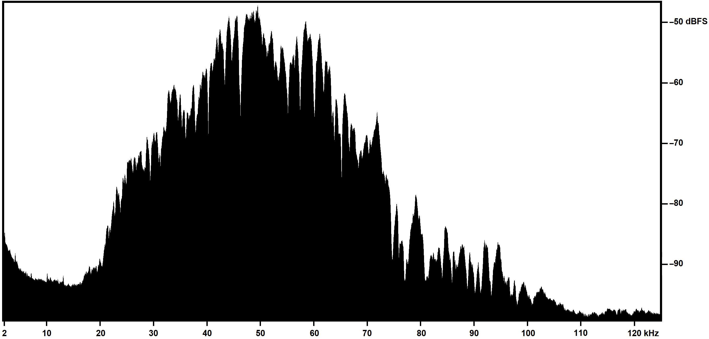
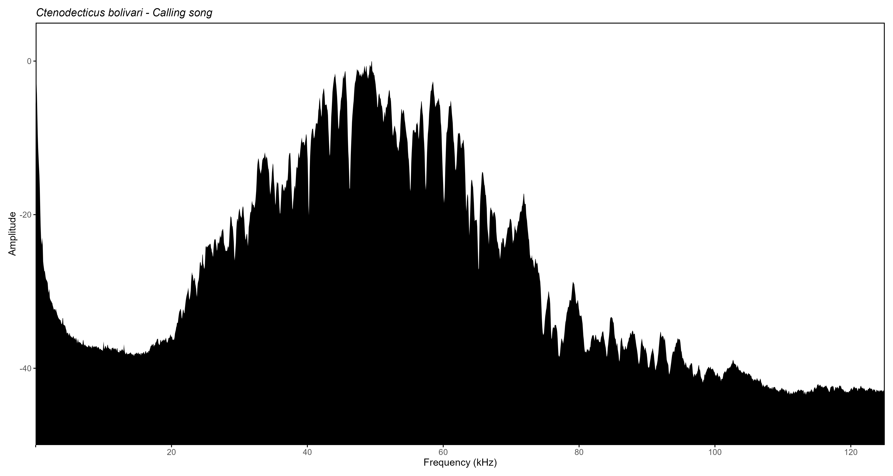
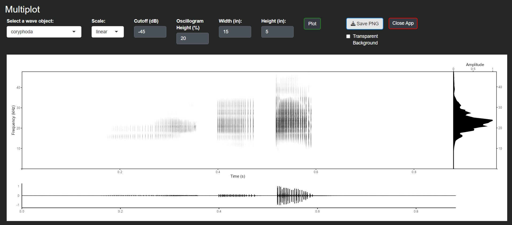
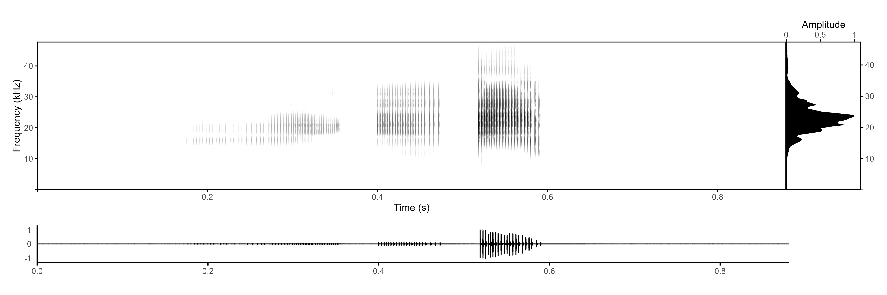

Comparing Rthoptera with other workflows
Anonymous
2025-01-15
Source:vignettes/Software_comparison.Rmd
Software_comparison.RmdBefore the development of Rthoptera, being dissatisfied with the image output provided by the available bioacoustics software packages to create meaningful and clear illustrations suitable for scientific publication, the authors used screenshots from the relevant views obtained by closed-source software, mostly Adobe Audition (Adobe Inc., 2023).
Obviously, not being conceived for such usage, the screenshots need extensive manual refinements, that require the coordinated use of other closed-source software, that usually include MS-Paint and Adobe Photoshop. After the selection of the relevant portion of the audio file, the bare minimum of activities needed includes:
• Taking a screenshot (i.e., copying current screen content in the RAM image clipboard);
• Pasting the screenshot in the image editing environment;
• Improving image clarity by adjusting image levels (e.g., brightness, contrast, sharpness, etc.). Other post-production interventions needed may include image mode conversion (color to black & white or vice-versa) and feature (e.g., grid lines) removal;
• Adding readable vertical and horizontal axes, including tick marks, values and labels: even though the original screenshot may include such information, the on-screen font size is usually too small to be readable. Furthermore, if a non-initial section of the audio file is illustrated, the on-screen horizontal time scale does not start with zero, which complicates its reading. For those reasons, suitably sized and zeroed horizontal and vertical scales need to be juxtaposed to the image, in a time-consuming process. Usually, under Windows operating system, this activity is performed with MS-Paint. On average, obtaining each image may require from 10 to 20 minutes of work (e.g., as in Brizio et al., 2021). The raster images emerging from the process described are sufficiently clear, but there are drawbacks, including:
• Image content is limited to the views available in the audio analysis software: usually, this boils down to time/pressure envelopes, spectrograms and mean spectra;
• Composite images (e.g. time/pressure envelopes at different time scales, or combination of mean spectra and spectrogram) cannot be obtained in a single passage, and require a mosaic of separately generated images;
• Images do not include any data besides those appearing in the image itself. If further data are needed for the purpose of the publication, they must be obtained in other ways, typically by manual transcription of values read on screen, often obtained by suitably positioning the mouse pointer, e.g. in the case of the reading of pressure levels from mean spectra (not forgetting that the pixel-wise process of pointer positioning is inconsistent and error-prone);
• Image style (e.g., color coding of pressure levels) may vary from one image to another, depending on the software used for screenshot generation.
The whole process described above is highly dependent from the skill, the experience and the individual sensitivity of each operator, and consistency of the results by different operators is not fully granted.
This is an example of a Mean Power Spectrum extracted from a screenshot from Adobe Audition and post-processed in Microsoft Paint and Adobe Photoshop to change the color scale and add new axes labels, requiring about 10 minutes to produce: 
Below is the same plot type produced by Rthoptera (using normalized amplitude instead of dB FS). Including the selection of the file, changing scale parameters and custom labels on the Y-axis, modifying the output dimensions, and typing down the species name and call type, it took 45 seconds to produce: 
Rthoptera is capable to improve the efficiency and effectiveness of the image generation phase:
• by granting a more objective approach: the user chooses the parameters’ values, and the image plus data tables generation is entirely and consistently managed by Rthoptera, excluding the vagaries of a lengthy manual process and the impact of different operator’s habits or manual skills;
• by granting an advantage in terms of time required for image generation: even though R and RStudio are not especially suited for bioacoustic analyses, the worst-case scenario observed during the tests (up to 100 seconds for the generation of a composite image with Rthoptera) compares very favorably with the 20 or 30 minutes required to obtain a comparable image by the screenshot-based process illustrated above;
• by generating the publication-ready plots, including composite illustrations (i.e., “multiplot”) that would be even more time consuming to generate otherwise with a multi-software approach.
• by simultaneously producing multiple tabular datasets that would have required separate software (e.g., Excel) to manipulate;
• by providing new metrics (Pattern Complexity, Broadband Activity…) that may set a standard for future investigations.
Raven Pro 1.6
NOTE: For this comparison we used a machine with Windows 11 Home, 64 bit, 16 GB RAM.
Raven Pro 1.6 (Cornell Lab of Ornithology, 2021) is
a dedicated bioacoustics software build by and for scientists. Even the
free version Raven Lite offers a suite of useful tools
for acoustic analysis, and is extensively used by researchers in
acoustic communication of birds, anurans, bats, and other mammals. One
disadvantage of this software is its proprietary nature, limiting the
user’s ability to customize the plots and forcing them to rely on extra
software to obtain the desired results. The plot shown below took about
70 seconds to make in Raven Pro 1.6, including
un-checking the position marker (which is wrongly shown in many
scientific publications), adjusting the zoom level on the oscillogram,
the window size and contrast for the spectrogram, and finally changing
to grey scale in Microsoft Office, which does not allow to control the
output dimensions either:

While the output is nice, it is far from customizable, and the user can’t control the output parameters either (e.g., image dimensions). To our knowledge, all the plot in Raven are separate views, not allowing to add a Mean Power Spectrum aligned on the side of the spectrogram. If we wanted to achieve the same output as in the “multiplot” from Rthoptera, we would have to manually paste the spectral plot on the side, requiring a manual adjustment of the dimensions which would likely distort the axes labels. If we consider iterating this process over many recordings, it translates into a very tedious endeavor.
In Rthoptera, the final output can be obtained in about 10 seconds without these extra manual processing. First, we will load the data from the RthopteraSounds package:
library(RthopteraSounds)
library(Rthoptera)
data("coryphoda") # Load the sample recording of Coryphoda albidicollis.Then, we launch the app multi_plot app with the following call:
launch_app("multi_plot")Here we can modify some parameters before computing the plot: 
This is the exported image: 
References
Adobe Inc. (2023). Adobe Audition (Version 23.0) [Computer software]. Adobe. https://www.adobe.com/products/audition.html
Brizio, C.; Buzzetti, F.M.; Pavan, G. Beyond the audible: Wide band (0–125 kHz) field investigation on Italian Orthoptera (Insecta) songs. Biodivers. J. 2020, 11, 443–496. https://doi.org/10.31396/Biodiv.Jour.2020.11.2.443.496.
Cornell Lab of Ornithology. (2021). Raven Pro: Interactive sound analysis software (Version 1.6) [Computer software]. https://ravensoundsoftware.com/